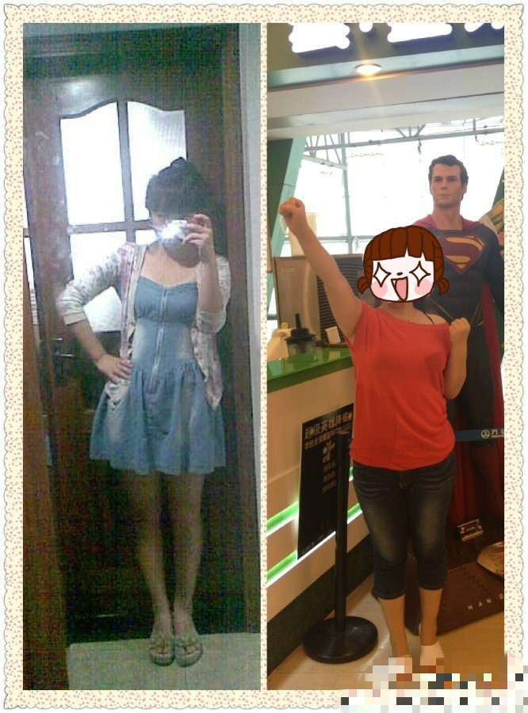

正文:
左边还没到100，大概105，右边130吧！小时候很瘦，后来生病吃药就胖了，小时候根本不爱吃饭，现在。。。吃起来就控制不住orz。因为后来一直胖，就算那个时候105还是觉得胖，那时候在我心里觉得自己就是右边的130的样子，现在回头看那个时候挺瘦了，就因为不觉得自己瘦，所以胖起来的时候觉得自己本来就这样，之前最胖也就120，然后胖到140的时候简直吓屎了最重的时候71公斤，去年减到65-
这是上个月朋友结婚，我是伴娘，看看那大膀子，最愁的就是大臂，就是比同体重或者比比我胖的人还粗，哎西吧
125左右吧，等到了一百斤去回答120~100的世界有什么不同，哈哈！！！
上个月穿不上的裙子，我今天都穿出来了吼吼，
加油！